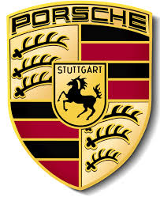
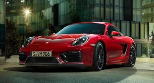
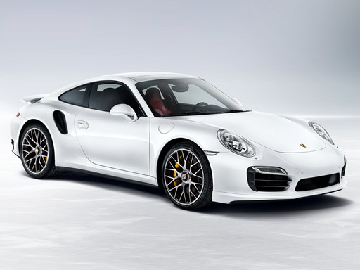
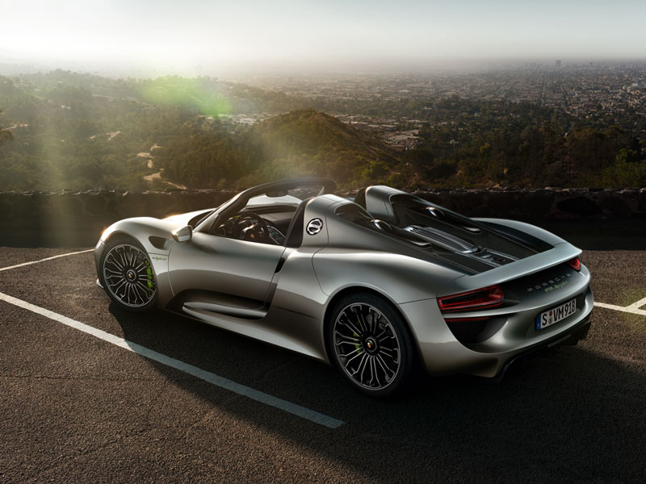

Porsche
Sobre nosotros
Porsche AG, también conocida como Porsche SE o Porsche, es una empresa de automóviles alemana que fabrica automóviles deportivos de
alta gama. Es el principal accionista con derecho a voto del Grupo Volkswagen, con el que en 2009 planteó su posible fusión. Fue
fundada en Stuttgart en 1931 por Ferdinand Porsche y su hijo Ferry Porsche.
Nuestros Vehículos
La idea Cayman GTS


La idea Cayman. Un deportivo que busca la curva como ningún otro y la apura hasta
sus límites. Una idea tan pegada a la carretera que casi no se puede aumentar más.
Pero sí intensificar. Con solo tres letras: GTS. Tres letras que empleamos por
primera vez en el año 1963 en el 904 GTS, un deportivo con motor central. Tres
letras que, desde entonces, son el tema de conversación de entusiastas del
automovilismo de competición, tanto dentro como fuera del circuito. En la
actualidad, son sinónimo de un plus de potencia y un equipamiento aún más
deportivo. Revisado y perfeccionado, desde el diseño hasta el motor bóxer. Para más
curva. En cada curva.
sus límites. Una idea tan pegada a la carretera que casi no se puede aumentar más.
Pero sí intensificar. Con solo tres letras: GTS. Tres letras que empleamos por
primera vez en el año 1963 en el 904 GTS, un deportivo con motor central. Tres
letras que, desde entonces, son el tema de conversación de entusiastas del
automovilismo de competición, tanto dentro como fuera del circuito. En la
actualidad, son sinónimo de un plus de potencia y un equipamiento aún más
deportivo. Revisado y perfeccionado, desde el diseño hasta el motor bóxer. Para más
curva. En cada curva.
Carrera 911

Con la generación actual de 911 Turbo, nuestros ingenieros han vuelto a desarrollar
el 90% de todos los componentes y establecido nuevamente una referencia.
Con una potencia del motor aumentada, con el cambio Porsche Doppelkupplung
(PDK) de serie en todos los modelos, con un equipamiento de serie
considerablemente ampliado y con la gestión térmica. Han superado las expectativas
con las ruedas traseras autodireccionables y el sistema Porsche Active
Aerodynamics (PAA) que, en esta forma, se utiliza por primera vez en el mundo en
vehículos con homologación de calle. Éstas no son más que algunas de las
respuestas que convierten un Porsche apto para el circuito de competición en un
automóvil deportivo apropiado para el uso diario y que nos demuestran que solo
logra avanzar aquel que utiliza como pautas sus propios sueños. Nuestros
ingenieros lo hacen desde hace 50 años. Con la idea del 911 fundamentaron la
tradición de futuro. El 911 Turbo la continúa. Lo que lo distingue en el fondo es la
voluntad incondicional de potencia. Con ella avanza hasta el límite de lo factible.
el 90% de todos los componentes y establecido nuevamente una referencia.
Con una potencia del motor aumentada, con el cambio Porsche Doppelkupplung
(PDK) de serie en todos los modelos, con un equipamiento de serie
considerablemente ampliado y con la gestión térmica. Han superado las expectativas
con las ruedas traseras autodireccionables y el sistema Porsche Active
Aerodynamics (PAA) que, en esta forma, se utiliza por primera vez en el mundo en
vehículos con homologación de calle. Éstas no son más que algunas de las
respuestas que convierten un Porsche apto para el circuito de competición en un
automóvil deportivo apropiado para el uso diario y que nos demuestran que solo
logra avanzar aquel que utiliza como pautas sus propios sueños. Nuestros
ingenieros lo hacen desde hace 50 años. Con la idea del 911 fundamentaron la
tradición de futuro. El 911 Turbo la continúa. Lo que lo distingue en el fondo es la
voluntad incondicional de potencia. Con ella avanza hasta el límite de lo factible.
El Porsche Spider

Es el mejor coche de Porsche. este vehiculo esta preparado para la maxima velocidad en circuitos, ya
que una clase de este vehiculo es utilazada por la propia Porsche para competir de forma profesional.
Es el coche mas caro con diferencia, pero la relacion calidad precio en comparacion con coches de
similares caracteristicas de otras marcas, hacen que esta belleza sea la mejor opcion. Es un coche de
ensueño para cualquier amante del motor.
que una clase de este vehiculo es utilazada por la propia Porsche para competir de forma profesional.
Es el coche mas caro con diferencia, pero la relacion calidad precio en comparacion con coches de
similares caracteristicas de otras marcas, hacen que esta belleza sea la mejor opcion. Es un coche de
ensueño para cualquier amante del motor.
Ultima modificacion:19/11/2015
Autor: Daniel Gonzalez Garcia
Basado en la informacion de las paginas oficiales